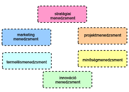

A projektmenedzsment kulcsfontosságú szerepet játszik a vállalkozások sikeres működésében. Ez egy multidiszciplináris terület, amely megköveteli a stratégiai tervezést, az erőforrás-gazdálkodást, a kockázatkezelést és az emberi tényezők értelmezését. Egy projekt menedzsere a projekt teljes életciklusát koordinálja, a kezdeti koncepciótól a zárásig, beleértve a költségvetési és időkeretek betartását is.
A projektmenedzsment folyamata során több kulcsfontosságú fázison megy keresztül a projekt: az indítástól, amikor az alapötletet meghatározzák, a tervezésen és a végrehajtáson át, ahol a projektterv megvalósul, egészen az ellenőrzésig és a projekt zárásáig. Mindegyik szakasz más-más kihívásokkal és feladatokkal jár, amelyek megkövetelik a menedzsment adaptív készségeit.
A projektmenedzser a projektcsapat vezetője, aki felelős a projekt célok és követelmények meghatározásáért, a tervek kialakításáért, a csapat munkájának koordinálásáért és az eredmények monitorozásáért. Emellett a kommunikációs csatornát biztosítja a projekt érdekeltségi csoportjai között, mint például a csapat tagjai, az ügyfelek és a szállítók.
A modern projektmenedzsment számos eszközt és technikát használ, hogy segítse a projektmenedzserek munkáját. Ezek az eszközök kiterjedhetnek a hagyományos Gantt-diagramoktól és ütemtervektől kezdve, a legújabb agilis és scrum módszertanokig, valamint a projektmenedzsment szoftverekig, mint például a Microsoft Project, JIRA, vagy Asana, amelyek lehetővé teszik a feladatok hatékony nyomon követését és a kommunikációt a csapatok között.
A projektmenedzsment nem mentes a kihívásoktól, beleértve a szűkös erőforrásokat, a változó piaci körülményeket és az ügyfél elvárásainak megfelelését. A kihívások kezelése stratégiai gondolkodást és kiváló problémamegoldó képességet követel, valamint rugalmasságot a változásokhoz való alkalmazkodásban.